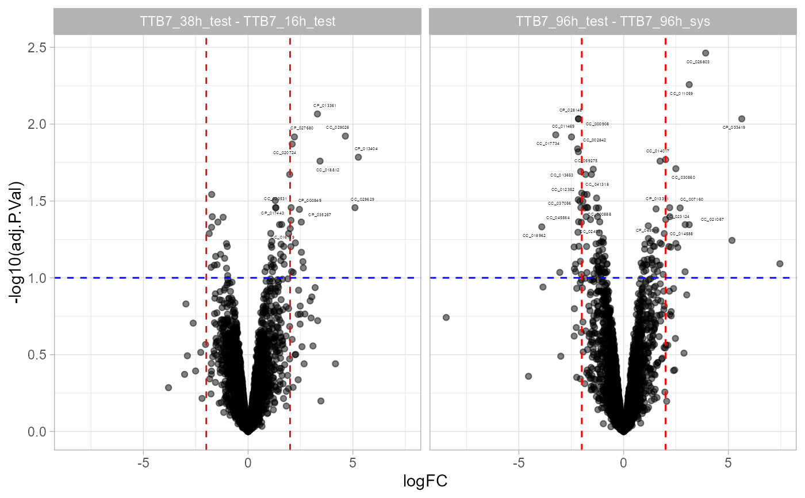

plot volcano given multiple conditions
multigroupVolcano( .data, effect = "fc", p.value = "p.adjust", condition = "condition", colour = "colour", xintercept = c(-2, 2), pvalue = 0.05, label = NULL, size = 1, segment.size = 0.3, segment.alpha = 0.3, ablines = data.frame(fc = c(0, 0), p = c(0.01, 0.05), Area = c("p=0.01", "p=0.05")), scales = "fixed", maxNrOfSignificantText = 20 )
| effect | column containing effect sizes |
|---|---|
| p.value | column containing p-values, q.values etc |
| condition | column with condition |
| colour | colouring of points |
| xintercept | fc thresholds |
| pvalue | pvalue threshold |
| label | column containing labels |
| size | controls size of text |
| segment.size | controls size of lines |
| segment.alpha | controls visibility of lines |
| ablines | adds ablines horizontal and vertical |
| scales | parameter to ggplot2::facet_wrap |
| misspX | data in long format |
Other utilities:
INTERNAL_FUNCTIONS_BY_FAMILY,
jackknifeMatrix(),
matrix_to_tibble(),
my_jackknife(),
pairs_smooth(),
pairs_w_abline(),
panel.cor(),
panel.hist(),
removeNArows(),
split2table(),
table_facade.list(),
table_facade()
#> logFC adj.P.Val #> 1 -0.05412905 0.9165288 #> 2 -0.29646881 0.4749545 #> 3 -0.27289919 0.6504914 #> 4 -0.09706135 0.8377251 #> 5 -0.07349173 0.9207106 #> 6 -0.08775884 0.8569359 #> Condition colour #> 1 TTB7_38h_test - TTB7_16h_test forward #> 2 TTB7_96h_test - TTB7_96h_sys forward #> 3 (TTB7_96h_test - TTB7_16h_test) - (TTB7_96h_sys - TTB7_16h_sys) forward #> 4 TTB7_38h_test - TTB7_38h_sys forward #> 5 (TTB7_38h_test - TTB7_16h_test) - (TTB7_38h_sys - TTB7_16h_sys) forward #> 6 TTB7_96h_test - TTB7_16h_test forward #> Name #> 1 CC_000006 #> 2 CC_000006 #> 3 CC_000006 #> 4 CC_000006 #> 5 CC_000006 #> 6 CC_000006multigroupVolcano(prolfqua::multigroupFCDATA, effect="logFC", p.value="adj.P.Val",condition="Condition",colour="colour",label="Name" )